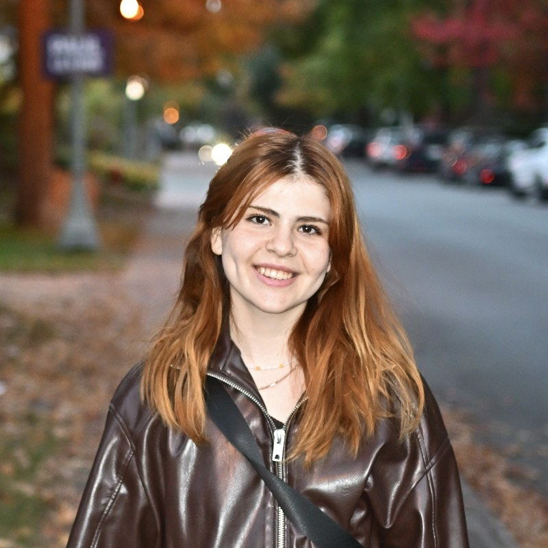

Hi, I'm Rumeysa (she/her) — a PhD candidate in Computer Science at Concordia University, where I study how people interact with virtual and augmented reality environments.
My research is motivated by a simple question: how can we interact with immersive environments as naturally as we interact with the physical world?
To explore this question, I design and evaluate interaction techniques that combine gaze, hand tracking, and voice input. My work aims to improve the accuracy, usability, and accessibility of XR systems, particularly for selection and manipulation tasks.
If I am not in the lab, probably I am taking pictures! I love photography.